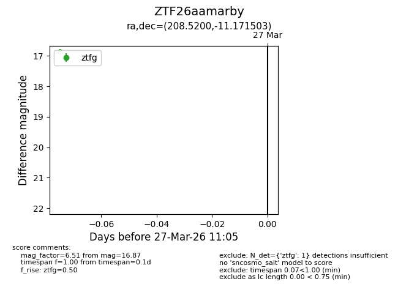
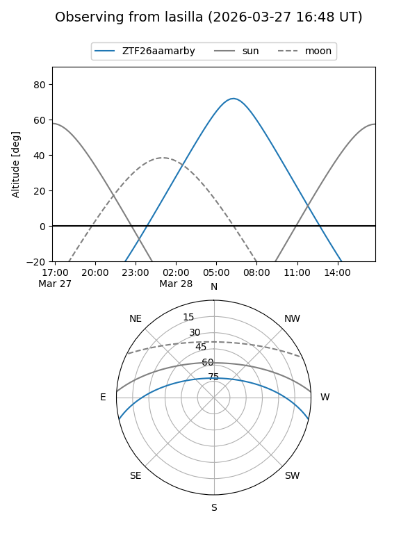
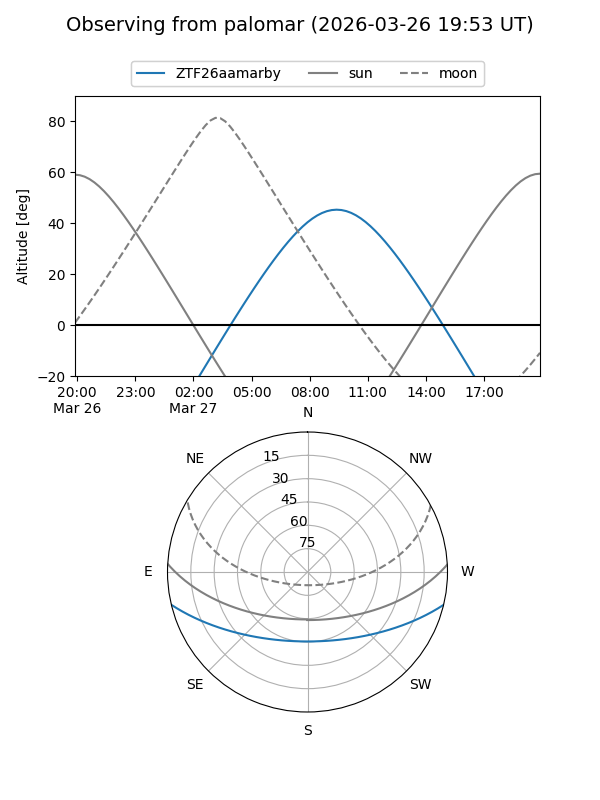

ZTF26aamarby
Target ZTF26aamarby at 2026-03-27 11:08
Aliases and brokers:
FINK: link
Lasair: link
ALeRCE: link
alt names
ZTF26aamarby (ztf,fink_ztf)
Coordinates:
equatorial (ra, dec) = 208.5200,-11.17150
equatorial (HMS+DMS) = 13:54:04.79,-11:10:17.41
galactic (l, b) = (326.6358,+48.79584)
Flags:
Photometry:
last ztfg=16.87
1 ztfg detections
Lightcurve

Visibility


Additional plots